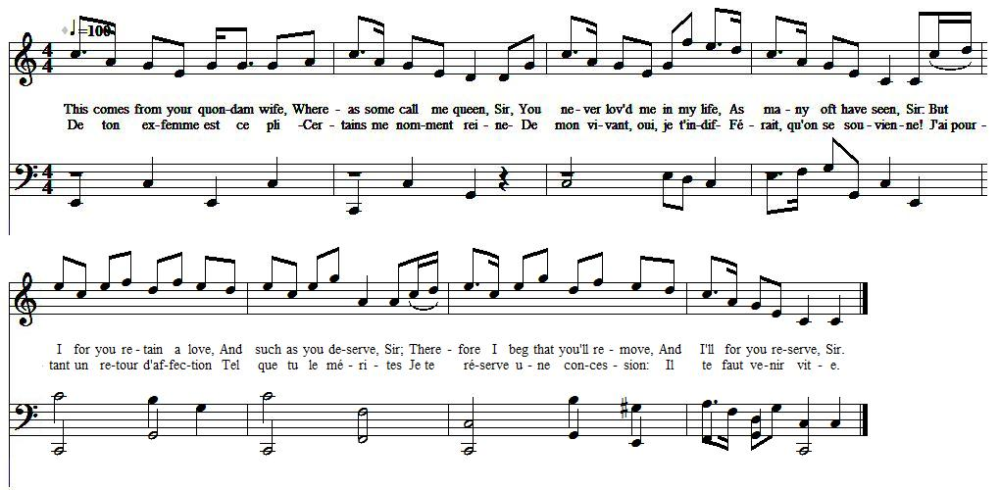
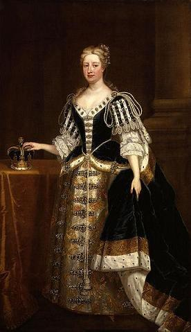

A song to 'Clout the Caldron'
Chant sur l'air du 'Battre le Chaudron'
from "The True Loyalist" , page 91, 1779
Tune - Mélodie N°1
"Have you any Pots or Pans? - Avez-vous des casseroles et des poêles?
From the "Scots Musical Museum", 1853 edition, volume VI, song 520, page 536
(Sound background to the present page)
Tune - Mélodie N°2
"Whurry Whigs awa! - Dehors les Whigs!"
"Alternative title: The Turnimspike - autre titre: Le péage"
From Hogg's "Jacobite Relics", vol I, N) 10, 1819
Tunes equenced by Christian Souchon
Tune - Mélodie N°3
"Clout the Cauldron - Battre le chaudron"
From the Herd's Collection, 1776, a variant of the foregoing
Tune sequenced by Ron Clarke (see links)

|
To the tune:
The tune N°1 is set to the song "Have you any Pots or Pans?" in the "Scots Musical Museum", 1853 edition, volume VI, song 520, page 536. There is some confusion regarding the proper name of this song, with it also appearing under the title 'Clout the Caldron' [which is one of the names given to the tunes N°2 and N°3, set to other songs: Whigs of Bothwell Bridge, Whurry Whigs awa, The Turnimspike ]. John Glen (1900) writes that it is not known who originally composed the song. However, those verses have been attributed to Allan Ramsay , and appear in the third volume of the 'Tea-Table Miscellany' (1724 - 1727). Glen believes that the proper melody for this song is the strathspey tune, Cameron has got his wife again ." In 'Clout the Caldron', a traveller tries to charm his way into a kitchenware maintenance job (and more besides), with a combination of subtle innuendo, and some rather incongruous appeals to classical precedent. He is of course sent packing." Source: David McGuinness (linnrecords.com): note to the CD "Concerto Caledonia - Mungrel Stuff" For a list of "Whigs in Hell" songs, click here |
A propos de la mélodie:
Le timbre N°1 accompagne le chant "Avez-vous des casseroles ou des poêles? dans le "Musée Musical Ecossais", édition de 1853, volume VI, chant 520, page 536. On n'est guère fixé sur le titre réel de ce chant, également appelé "Battre le chaudron" [qui est l'un des noms donnés aux timbres N°2 et N°3 qui accompagnet d'autres chants: Whigs de Bothwell Bridge, Dehors les Whigs, Le péage ]. John Glen (1900) indique qu'on ne sait pas qui composa le chant à l'origine. Cependant on a attribué ces vers à Allan Ramsay et on les trouve dans le 3ème volume des 'Miscellanées de la Table à thé' (1724 - 1727). Glen pense que la mélodie prévue pour ces paroles était le strathpey Cameron a récupéré sa femme ." Dans 'Battre le chaudron', un voyageur use de son charme pour obtenir d'une dame un emploi de chaudronnier, (ou plus si affinités) en mélangeant propos équivoques et références mythologiques plutôt malvenues. Bien entendu, il se fait remettre à sa place." Source: David McGuinness (linnrecords.com): note to the CD "Concerto Caledonia - Mungrel Stuff" Autres chants de "Whigs en enfer", cliquer ici . |

|
A SONG to
'Clout the Caldron'
1. This comes from your quondam wife, [1] Whereas some call me queen, Sir, You never lov'd me in my life, As many oft have seen, Sir: But I for you retain a love, And such as you deserve, Sir; Therefore I beg that you'll remove, And I'll for you reserve, Sir. - 2. A place, which I, with all my wits Have purchas'd since from home, Sir: It is in Hell with fiends to dwell, I pray, dear G[eor]die, come, Sir. [2] But, come not by yourself, great Lord, For fear you need a guide, Sir, Altho' I'm sure you can't mistake, The road to it 's right wide, Sir. 3. I pray make haste, rush to the place, For you it is prepar'd, Sir, It's at Satan's right-hand race: A portion to be shar'd, Sir, With Cr[om]well and auld Willie buck, [3] Two tyrants like yoursell, Sir, They had the luck for to be stuck In the worst place of Hell, Sir. 4. I say, make haste, do not delay, I beg you will no stay, Sir: And you bring your bairns and mine, They dare not disobey, Sir: Forget not Will, my favourite, [4] Leave him you'll not come speed, Sir, For all of you have not the wit To come, unless he bid, Sir. 5. This I've heard Satan oft declare That Hell will ne'er be fu', Sir, 'Till a' the G[er]man race be there, And then he'll have enew, Sir, Here Lo[ck]hart stands to guard us all, [5] A cent'nal very fit, Sir, Eternally in post install'd, We dare not bid him flit, Sir. Source: "The True Loyalist; or, Chevalier's Favourite: being a collection of elegant songs, never before printed. Also several other loyal compositions, wrote by eminent hands." Printed in the year 1779. page 91. |
 Caroline of Brandenburg-Ansbach by Charles Jervas |
CHANT sur l'air de
'Battre le chaudron'
1. De ton ex-femme est ce pli [1] - Certains me nomment reine- Moi qui de mon vivant t'indif- Férait, qu'on se souvienne! J'ai pourtant un retour d'affection Tel que tu le mérites Je te réserve une concession: Mais il faut venir vite. 2. Un lot que j'ai négocié Lorsque j'étais sur terre. Viens, je t'en prie, mon George aimé, [2] Près du diable en enfère! Mais ne viens pas seul, mon grand seigneur, De peur que tu t'égares Bien qu'en vérité pour se tromper La route est bien trop large. 3. Je t'en prie, vite, on t'attend. On t'a chauffé ta place. Juste à la droite de Satan Avec ceux de ta race: Cromwell avant tout, Guillot le bouc, [3] Tyrans comme toi-même, Qui sont maintenus par de la glu Au cœur de la géhenne. 4. Hâte-toi! Il n'est plus temps De t'arrêter en route; Surtout n'oublie pas les enfants Qui te suivront sans doute. Guillot le cadet, mon préféré [4] J'insiste pour qu'il vienne Vous autres, sinon, feriez faux bond. Il faut qu'il vous entraine. 5. Comme dit souvent Satan, Pour remplir la géhenne Il faut que tous les Allemands Jusqu'au dernier y viennent. Les autres plus tard. Il y a Lockhart, [5] Sentinelle de rêve Ici postée pour l'éternité, Sans espoir de relève. (Trad. Christian Souchon (c) 2011) |
|
[1]
Your quondam wife; some call me queen
: Queen Caroline (1683- 1737). This seems to be the only Jacobite song satirizing this intelligent woman who was very popular with the British people. A verse of the period went:
You may strut, dapper George, but 'twill all be in vain, We all know 'tis Queen Caroline, not you, that reign. [2] Geordie : King George II (1683 - 1760). [3] Willie buck : William of Orange was "gay". [4] Will, my favourite : William Duke of Cumberland, their second son. Caroline and her husband fought a constant battle against their eldest son, Frederick, Prince of Wales (Feckie). [5] Lockhart : Major James Lockhart of Cholmondeley's Regiment was the most notorious and the most cruel of the Duke of Cumberland's lieutenants. |
[1]
Ton ex-femme; certains me nomment reine
: la reine Caroline (1683 - 1737). Ce chant Jacobite est, semble-t-il, le seul à s'en prendre à cette femme intelligente, très aimée du peuple britannique. Une satire de l'époque disait:
Tu peux te pavaner, Georges, mais c'est en vain; Caroline règne à ta place, on le sait bien. [2] Georges : le roi Georges II (1683 - 1760) [3] Guillot le bouc : Guillaume d'Orange était homosexuel [4] Guillot, mon préféré : Le duc de Cumberland, leur deuxième fils. Caroline et son époux eurent constamment maille à partir avec leur fils aîné, Frédéric, le Prince de Galles (surnommé "Feckie"). [5] Lockhart : le commandant James Lockhart du régiment de Cholmondeley fut le plus fameux et le plus cruel des lieutenants du Duc de Cumberland. |
|
|
|